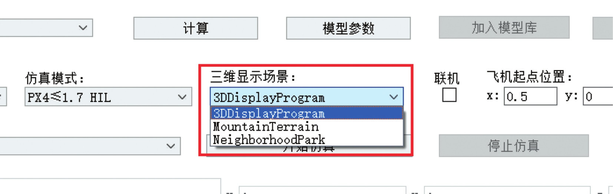
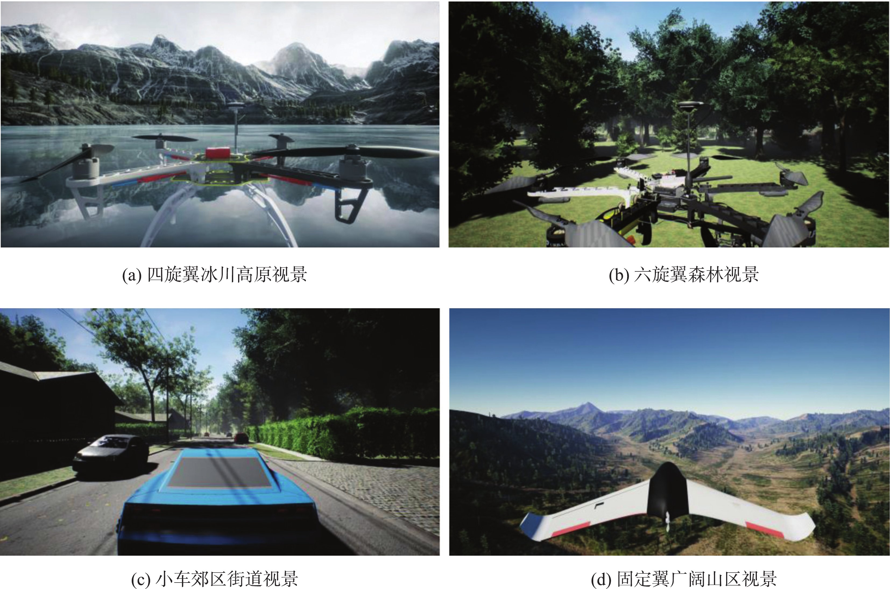
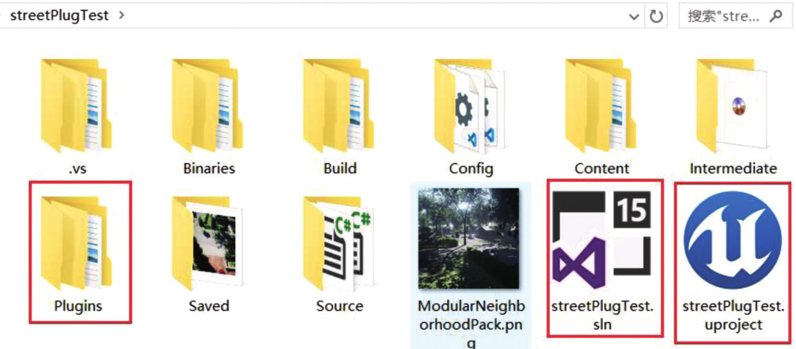
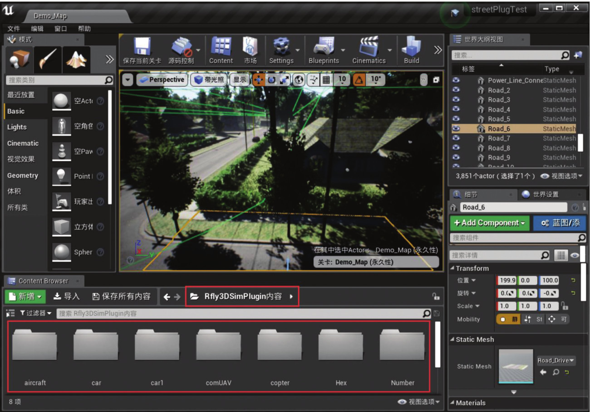
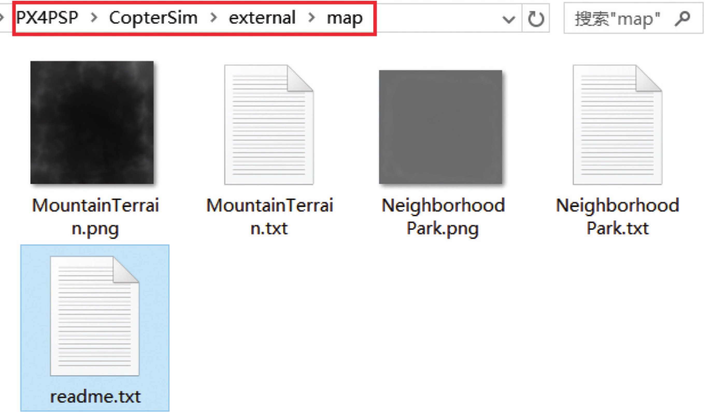

3. 场景¶
3.1. 基于 UE4 的三维视景介绍¶
CopterSim 提供了选择三维显示场景的功能。3DDisplay默认的场景是基于 Ogre 引擎开发的小巧三维场景，对计算机配置要求低，但是加载速度慢且不够逼真。

图 3.1 选择三维场景按钮¶
单击“三维显示场景”的下拉框可以看到所有的三维场景，其中“MountainTerrain”和“NeighborhoodPark”两个场景是基于 UE4 开发的更逼真的三维场景。在 CopterSim 中选择相应的场景后，再打开对应三维场景程序，即可实现不同三维场景的切换。

图 3.2 基于 UE4 的三维仿真场景¶
3.2. 基于 UE4 开发三维场景¶
通过UE4 接口插件，读者可以在 UE4 中快速搭建飞行场景。具体方法如下：
（1）新建 UE4 场景。自定义 UE4 三维场景项目文件夹，读者自行购买或者开发一个基于UE4(引擎版本大于等于 4.22，编译器 Visual Studio 2017 以上)场景工程。这里不介绍详细的流程，请自行查看官方教程（http://api.unrealengine.com/CHN/）。图 3.3 自定义 UE4 三维场景项目文件夹¶
（2）获取接口插件。解压“Rfly3DSimPlugin.zip”插件文件(和安装包)，将其复制到 “Plugins”文件夹(如果没有该文件夹，则手动创建)中。（3）生成“.exe”可执行程序。打开 UE4 编辑器，在 UE4 编辑器主界面可以查看自动加载的 “Rfly3DSimPlugin”插件内容。在 UE4 编辑器中简单地设置初始场景，编译代码后，就可以将其打包为“.exe”格式的 Windows 系统可执行程序。图 3.4 UE4 编辑器¶
（4）导出地图地形数据。在 UE4 中选中地形文件，并导出为“.png”格式的地形文件，同时选择三个关键位置点的坐标存储到“.txt”文件中。将得到的“.png”和“.txt”文件复制到 “CopterSimexternalmap”目录下。重启 CopterSim 后，就可以在场景下拉菜单中选择三维场景。图 3.5 将地形网格数据导入 CopterSim¶